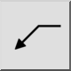
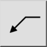
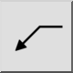
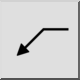

L 引出線
ツールバー/アイコン:
 

メニュー: i 寸法 > L 引出線
ショートカット: D, E | L, D
コマンド: leader | dimlea | de | ld
ツールバー/アイコン:
 

メニュー: i 寸法 > L 引出線
ショートカット: D, E | L, D
コマンド: leader | dimlea | de | ld
引出線は、下に示されるようなテキストエンティティから別のエンティティを指す矢です。
例において、テキストエンティティ「N7」は引出線でそれを指すことにより表面の特性について記述しています。: